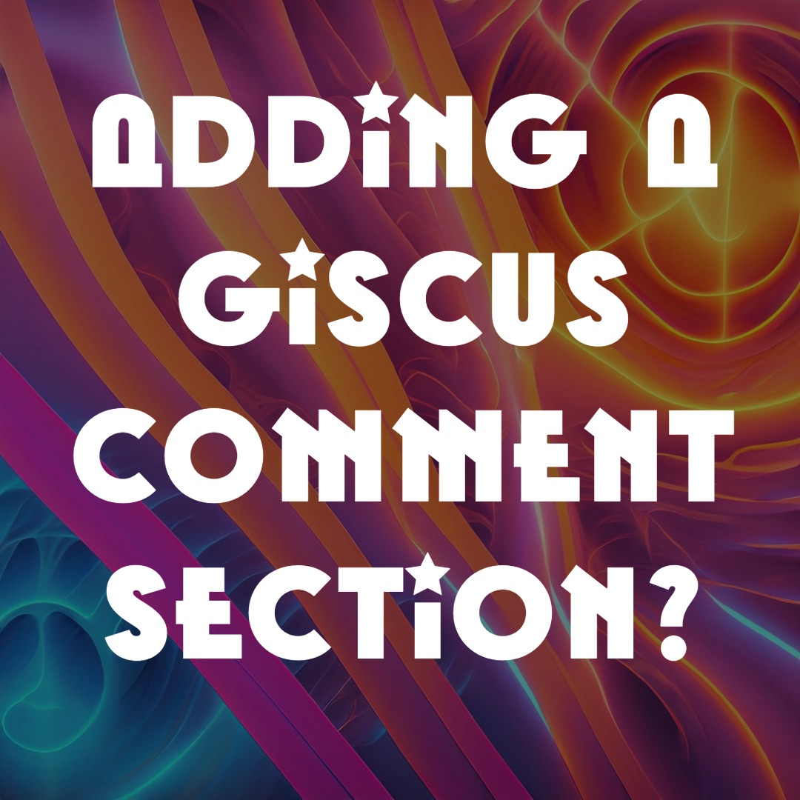
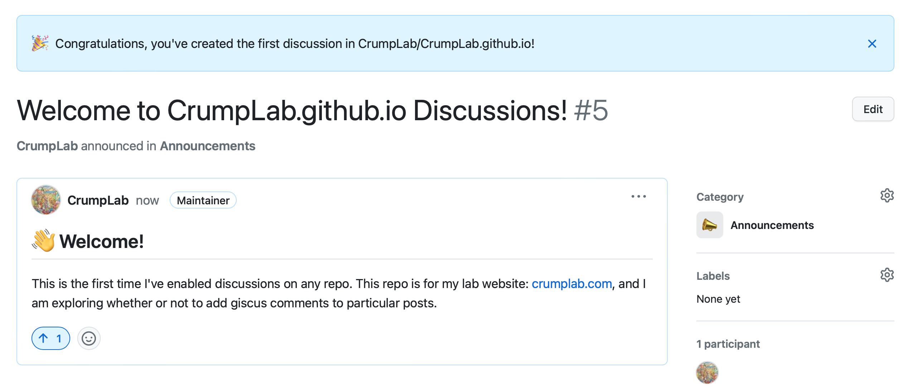

Adding a giscus comment section?
Blogging
giscus
Testing out adding a giscus comment section to a blog post.
On the one hand, I am using this post to try out giscus comments. On the other hand, I’m not sure I want to enable comments at all. Despite my hands, I’m trying it anyway.
I’m also new to github discussions, which seems pretty useful. Apparently, I need to enable this for a repo, and it becomes possible to use giscus on a quarto web page like this one. I’ll be following the quarto documentation on using giscus here: https://quarto.org/docs/output-formats/html-basics.html#commenting.
Achievement unlocked!

Then I need to add some bits to the yaml of this post…then install giscus…hmmm, this part… I can feel time slowing down.
https://github.com/giscus/giscus
After more googling and scanning blog posts about doing this, it appears the repo with discussions enabled for the comments could be any public repo. I like this approach better.
[x] - made a new repo crumplab_comments
[x] - installed giscus app
This was my first time installing a github app. Took half a sec to figure out where the instructions were… the link’s in the readme under giscus app:
https://github.com/apps/giscus
There are configuration options, but it might work without them. I should try to render this page and see what happens. Seems to work…very nice.
Testing…
I’m going to push this post online, then see if I can add a comment. Then I’m going to add the giscus comment option to a different post and add a comment there. I’m hoping this will be a very smooth way to have comments on some posts and not others.
If all goes well I’ll come back here and recap the steps, which turned out to be easier than I thought they would be 🤞.
Well, I’m impressed. It was a snap to add comments to another post. The comments show up as different threads in the discussion section of the repo I made just for the comments:

I think I’m getting email alerts from the giscus bot and I’ll need to quash that. Otherwise, seems like a decent option that I may use once in a while.
Recap of steps
These are the steps I took to add giscus comments to the bottom of my blog posts. I’m publishing this blog using quarto.
- Create a new public repository
- The giscus app will need permissions to write to the repo. I figured it would be safer to have a repo dedicated to comments, rather than enable discussions and write permissions to the main repo for my whole lab website
- Enable discussions for the repo.
- Install the giscus app for the repo
- Add the following yaml to individual posts where you want to enable giscus comments:
comments:
giscus:
repo: gituser/gitrepo- See more options from the quarto documentation
That’s it.